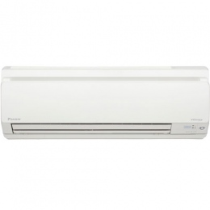

Thông tin chi tiết Điều hòa Daikin FTKD-25GVM/RKD-25GVM
Hãng sản xuất : DAIKIN
Kiểu điều hòa : Treo tường
Loại máy : 1 chiều lạnh Inverter
Tốc độ làm lạnh (BTU/h) : 8500
Công suất làm lạnh (W) : 2550
Diện tích thích hợp của buồng lạnh(m2) : 40
Tính năng : • Inverter
• Khử mùi
• Lọc không khí
• Tự động làm sạch
Nguồn điện : 110V
Độ ồn dàn trong (dB) : 37
Độ ồn dàn ngoài (dB) : 46
Kích thước dàn trong(mm) : 283 x 800 x 195
Kích thước dàn ngoài(mm) : 550 x 765 x 285
Trọng lượng dàn trong(kg) : 9
Trọng lượng dàn ngoài(kg) : 32
Xuất xứ : Nhật Bản

trở lại